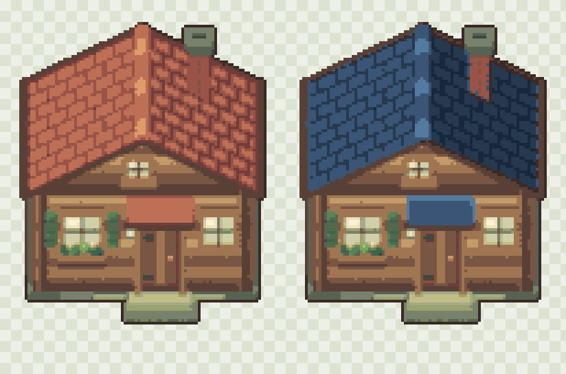
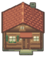
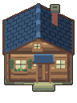
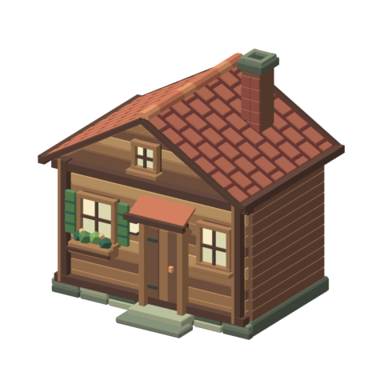
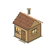

明日复 · 美术生产实验
一栋可编辑的暖木小屋
同一栋木屋、同一机位。看看它在方形草地中的比例，以及陶瓦与深蓝屋顶的不同气质。
正常游戏倍率 ×232px 方格建议占地 3×2地面锚点 (48,112)
网格和占地提示在建筑下方。草地是本轮的简易验证背景，尚未作为正式地形素材。
屋顶换色 · 同结构对比
左侧陶瓦，右侧深蓝。墙体、门窗、烟囱、镜头与建筑比例保持一致。

×4 像素预览，使用整数最近邻显示。屋顶外的 8,676 个像素完全相同。
原生精灵 · ×1


透明背景、固定色板、1px 轮廓。像素图没有从高分辨率预览缩小。
Blender 模型预览

此视图展示可编辑模型的侧面。游戏精灵另用水平旋转 0° 的正交机位，避免菱形地面投影。
与 P1.1 候选木屋对照

两者原生尺寸与投影不同。此对照用于观察结构与细节，不作为美术已通过的证明。
这轮验证了可编辑模型、材质换色和重复输出。屋面仍较规整，外墙和装饰还可进一步做自然化设计；是否值得扩展，由你的实际视觉判断决定。